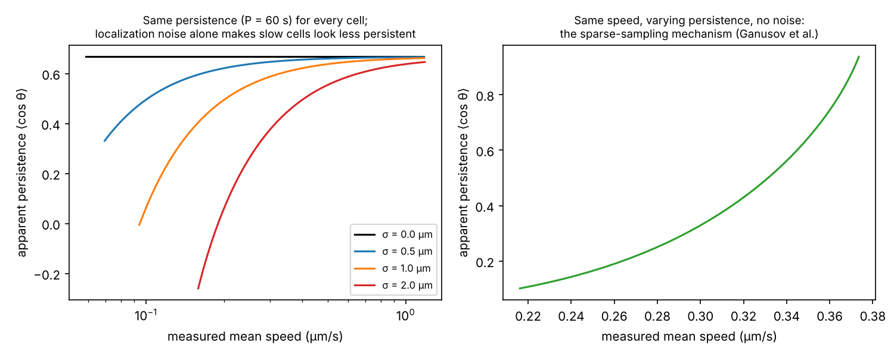
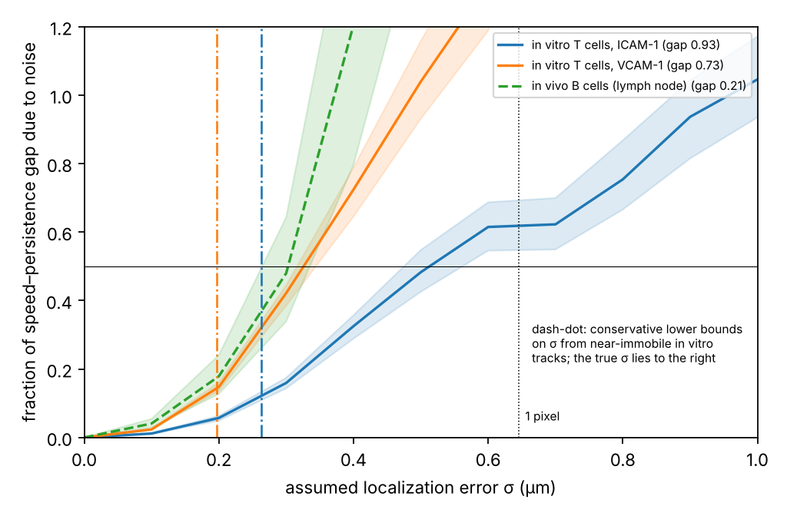

2026-10-08
Faster migrating cells tend to move more persistently, a relation proposed to be universal across cell types. We show that centroid localization error alone produces this relation in a population of cells whose speed and persistence are independent. Error of standard deviation \(\sigma\) per coordinate lowers the lag-1 correlation of consecutive steps by an amount that grows as the cell’s displacement per frame shrinks. As a result, slow cells look less persistent. For a persistent random walk we give the measured step correlation and mean turning cosine in closed form, together with an exact per-cell inversion. Because \(\sigma\) cannot be reliably estimated from short tracks, we report a sensitivity curve: the fraction of the observed speed–persistence gap that noise of size \(\sigma\) would account for. We applied it under protocols fixed before the data were analysed to five public track sets. In three in vivo lymph-node datasets, T cells and neutrophils show no positive gap in the noise-correctable measure, and the B-cell gap would be half explained by \(\sigma\approx0.3\)–0.4 \(\mu\)m. In vitro T cells on ICAM-1 and VCAM-1 show a strong coupling, but \(\sigma\) of 0.6 and 0.4 \(\mu\)m respectively, under one camera pixel, would explain half of it. Nearly immobile tracks give a conservative lower bound \(\sigma\gtrsim0.2\) \(\mu\)m, so noise accounts for at least 12–14% of the in vitro coupling. We also show that the obvious upper bound from the same tracks is biased by selection and invalid. The results argue for reporting an independent localization-error calibration with any speed–persistence analysis.
Maiuri et al. reported that across many cell types, faster cells turn less, and they traced this “universal coupling between cell speed and cell persistence” to actin flows . Since then, speed–persistence and speed–turning correlations have been read as cell-intrinsic programs. Ganusov, Zenkov and Majumder showed that such correlations arise naturally when tracks are sampled at intervals comparable to the persistence time and persistence varies between cells . This is a measurement effect requiring no biological coupling.
A second measurement effect works at the opposite end, at frame intervals that are short or displacements per frame that are small. Every tracked position carries a localization error. In single-particle tracking its effect on mean-squared displacements is well understood . Here we work out its effect on persistence. The mechanism is simple. Consecutive steps share a position, so independent position errors anticorrelate them. The anticorrelation matters most for cells that move little between frames. Speed heterogeneity alone then produces “faster cells are straighter”. We give the closed form, a noise-correctable test, and its results on five public datasets. We make no claim about the data of Ref. .

Take a two-dimensional persistent random walk whose velocity is an Ornstein–Uhlenbeck (OU) process. Each coordinate has velocity variance \(v^2\) and persistence time \(P\). Positions are sampled every \(\Delta t\), and each coordinate is observed with independent Gaussian error of variance \(\sigma^2\). With \(x=\Delta t/P\), the true steps of one coordinate have variance and lag-1 covariance \[\begin{aligned} V&=2v^2P^2\left(x-1+e^{-x}\right),\\ C_1&=v^2P^2\left(1-e^{-x}\right)^2 . \end{aligned}\] The error adds \(2\sigma^2\) to the step variance. Since consecutive steps share one position, it also adds \(-\sigma^2\) to their covariance. The measured consecutive steps are therefore isotropic Gaussian vectors with correlation \[\rho=\frac{C_1-\sigma^2}{V+2\sigma^2}, \label{eq:rho}\] and the mean cosine of the turning angle between them is \[E[\cos\theta]=\frac{\pi}{4}\,\rho\;{}_2F_1\!\left(\tfrac12,\tfrac12;2;\rho^2\right). \label{eq:cos}\] The mean measured speed is \(\sqrt{\pi(V+2\sigma^2)/2}/\Delta t\). Equations ([eq:rho]) and ([eq:cos]) agree with Monte Carlo simulation to within 1–2% over five parameter sets.
\(\rho\) depends on speed only through \(\sigma^2/(v^2P^2)\), the noise relative to the distance a cell covers in one persistence time. At fixed \(P\) it therefore rises monotonically with \(v\) (Fig. [fig:theory], left). Any spread of speeds in the population then shows up as a positive speed–persistence correlation. With realistic parameters (\(P=60\) s, \(\Delta t=24\) s, speeds 0.1–1 \(\mu\)m/s), \(\sigma=0.5\) \(\mu\)m halves the apparent persistence of cells moving at \(\sim\)0.07 \(\mu\)m/s. Sparse sampling works the other way (Fig. [fig:theory], right): noise biases fast frame rates, while sparse sampling biases slow ones.
Inversion. For each cell \(c\) we use the lag-1 step correlation \(r_c=\hat C_{1,c}/\hat V_c\), where the uncentred moments are pooled over both coordinates. Equation ([eq:rho]) inverts exactly, \[r_c^*=\frac{\hat C_{1,c}+\sigma^2}{\hat V_c-2\sigma^2}, \label{eq:inv}\] which removes the noise bias whatever the cell’s speed or persistence. The turning-angle cosine of Eq. ([eq:cos]) has no such simple inverse, so it is reported as a secondary statistic only.
Effect size. We split cells into terciles of measured speed. The persistence gap \(G\) is the mean \(r\) of the fastest third minus that of the slowest third. With \(G_{\rm corr}(\sigma)\) the same gap computed from \(r^*\), the fraction of the gap attributable to noise of size \(\sigma\) is \[f_{\rm noise}(\sigma)=1-G_{\rm corr}(\sigma)/G_{\rm raw}.\] Cells with \(\hat V_c-2\sigma^2<0.2\,\hat V_c\), which have too little signal to correct, are dropped from both gaps, and their number is reported. Uncertainties come from a 300-replicate bootstrap over cells.
Why a curve. On synthetic populations, the correction with the true \(\sigma\) behaves as intended. With no coupling and \(\sigma=1\) \(\mu\)m it attributes 98% of the gap to noise. With a genuine coupling (persistence proportional to speed) and \(\sigma=0.2\) \(\mu\)m it attributes 18%. But \(\sigma\) itself is poorly identified from tracks of 6–40 positions. A lag-covariance estimator that is unbiased under homogeneous persistence ranged from 0.48 to 1.24 \(\mu\)m over ten seeds for a true value of 1.0, and it fails when persistence varies between cells. The primary output is therefore the curve \(f_{\rm noise}(\sigma)\). It is summarized by \(\sigma_{1/2}\), the smallest \(\sigma\) at which noise explains half the gap.
Preregistration. The protocol was committed to a public repository before any speed or persistence statistic of the real tracks was computed. Four dated amendments, made on synthetic data before the real-data run, record how the method arrived at this form. For the in vitro data the protocol was rerun unchanged, apart from the frame interval, together with fixed decision rules. Coupling is called not robust to localization noise if \(\sigma_{1/2}\) is at most one pixel, and robust if \(\sigma_{1/2}\) exceeds two pixels. Synthetic self-tests at each frame interval had to pass first, and did.
Data. (i) Two-photon tracks of T cells, B cells and neutrophils in mouse lymph nodes, distributed with celltrackR : 2D, \(\Delta t=24\) s, with 199, 74 and 363 cells of at least 6 positions. (ii) T cells migrating in vitro on ICAM-1 or VCAM-1, imaged by 10\(\times\) phase contrast every 30 s for 10 min and tracked with StarDist and TrackMate . We used the CellTracksColab compilation , with pixel size 0.645 \(\mu\)m. It gives 820 (ICAM-1) and 1083 (VCAM-1) gap-free tracks of at least 6 positions; 122 tracks with missing frames were excluded.
| Dataset | Cells | \(G_{\rm raw}\) | \(\rho_S\) | \(\rho_S^{(2)}\) | \(f_{\rm noise}\) | \(\sigma_{1/2}\) (\(\mu\)m) |
|---|---|---|---|---|---|---|
| T cells (LN) | 199 | \(-0.04\) | 0.28 | 0.39 | – | none |
| B cells (LN) | 74 | 0.21 | 0.61 | 0.69 | 0.48 | 0.4 |
| Neutrophils (LN) | 363 | \(-0.11\) | 0.02 | 0.25 | – | none |
| ICAM-1 T cells | 820 | 0.93 | 0.83 | 0.80 | 0.16 | 0.6 |
| VCAM-1 T cells | 1083 | 0.73 | 0.76 | 0.72 | 0.42 | 0.4 |

Table 1 and Fig. 1 summarize the results.
In vivo. In the noise-correctable measure, T cells and neutrophils show no positive gap, so there is no coupling for noise to explain. B cells do show one, but a localization error of only 0.3–0.4 \(\mu\)m would explain between half and all of it. That is plausible for centroids of \(\sim\)7 \(\mu\)m cells in two-photon stacks, but it is unmeasured. The conventional metric disagrees with the noise-correctable one in the direction the theory predicts. For T cells, mean turning cosine rises with speed (\(\rho_S=0.28\); cosine gap 0.20) even though \(G_{\rm raw}\) is slightly negative. Halving the frame rate raises \(\rho_S\) in all three datasets, consistent with the sparse-sampling mechanism of Ref. . For these data, then, noise and sampling bias the conventional statistic in the same direction, from opposite ends of the frame-interval range.
In vitro. The coupling is strong: \(G_{\rm raw}=0.73\)–0.93 and \(\rho_S=0.76\)–0.83. Halving the frame rate slightly lowers it, so sparse sampling is not driving it. Still, \(\sigma_{1/2}\) is 0.6 \(\mu\)m on ICAM-1 and 0.4 \(\mu\)m on VCAM-1, both below the 0.645 \(\mu\)m pixel. The frozen verdict for both conditions is therefore not robust to localization noise. This means the tracks alone cannot separate the coupling from a noise artefact; it does not mean the coupling is an artefact. At \(\sigma=0.2\) \(\mu\)m, about a third of a pixel and plausible for StarDist centroids of \(\sim\)10 \(\mu\)m cells, noise explains only 6–15%.
This analysis was done after the frozen verdict. For any subset of tracks, persistent motion contributes \(C_1\ge0\), so \(\sigma^2\ge-\langle\hat C_1\rangle\) over that subset. The slowest 5% of in vitro tracks, ranked by \(\hat V\), have mean lag-1 step correlation \(-0.38\) (ICAM-1) and \(-0.26\) (VCAM-1). Pure noise gives \(-0.5\). They give \(\sigma\ge0.26\) \(\mu\)m (16–84%: 0.25–0.28) and \(\sigma\ge0.20\) \(\mu\)m (0.19–0.21), so \(f_{\rm noise}\ge0.12\) and \(\ge0.14\). The bound rises with the selected fraction: for ICAM-1 it is 0.23, 0.26, 0.29 and 0.30 \(\mu\)m at 2, 5, 10 and 20%. That is the pattern expected if centroid error grows with cell deformation.
Selecting tracks on \(\hat V\) and then evaluating them on the same \(\hat V\) biases both moments low, because it picks the realizations whose noise happened to be small. For the lower bound the bias is in the safe direction. In synthetic controls with track lengths taken from the data, immobile fractions of 3–30%, and a true \(\sigma=0.25\) \(\mu\)m, it returned 0.18–0.20 \(\mu\)m. The tempting upper bound \(\sigma\le(\langle\hat V\rangle/2)^{1/2}\) from the same selection, however, is invalid: in the same controls it returned 0.26, 0.21 and 0.19 \(\mu\)m, below the true value in two of three cases. Selecting on the first half of each track and evaluating on the disjoint second half removes the bias: in all three synthetic controls the resulting bracket contains the true 0.25 \(\mu\)m. On the real tracks, though, it gives only loose upper bounds: 0.50 \(\mu\)m for VCAM-1 and 1.2 \(\mu\)m for ICAM-1. Cells that are slow in one half do not stay slow, because cells pause and resume. The tracks therefore show that noise explains at least about an eighth of the in vitro coupling, but they cannot exclude that it explains most of it.
Localization error biases persistence in a speed-dependent way. It can therefore manufacture, inflate or mask a speed–persistence coupling. The bias is set by \(\sigma\) relative to the per-frame displacement, so it matters most for slow cells, short frame intervals and coarse pixels. It is complementary to the sparse-sampling bias , and the two act at opposite ends of the frame-interval range. For some datasets there may be no frame interval free of both.
Three practical points follow. First, persistence measured by the lag-1 step correlation can be corrected exactly through Eq. ([eq:inv]), whereas turning-angle statistics cannot. Second, \(\sigma\) is not reliably identifiable from short tracks. A data-internal estimate should be validated on synthetic tracks of the same lengths and composition, and selection on noisy quantities can silently invalidate a bound, as shown above. Third, the clean remedy is experimental: image fixed cells or beads with the same pipeline, or re-segment the same frames under perturbation, and report \(\sigma\) with the speed–persistence analysis. With such a calibration the curves of Fig. 1 turn directly into an attribution.
The OU walk is a null model, not a description of lymphocyte motility. The data are 2D, and the in vivo tracks are projections of 3D motion. Our persistence measure differs from that of Ref. . The in vitro tracks are 21 frames long. None of the analysed datasets is from Ref. , and we draw no conclusion about those experiments.
All analysis code, frozen protocols with their amendment history, self-test outputs and result files are available from the author (analysis scripts labelled labs 48–52). The track data are public and are not redistributed; their checksums are recorded with the results.
We thank the authors of celltrackR and the CellTracksColab and StarDist–TrackMate teams for making their track data public. The analysis and code were developed with assistance from an AI system (Claude, Anthropic); the author takes responsibility for the content.
99 P. Maiuri et al., Cell 161, 374 (2015), doi:10.1016/j.cell.2015.01.056. V. V. Ganusov, V. S. Zenkov, and B. Majumder, Phys. Biol. 20, 025001 (2023), doi:10.1088/1478-3975/acb18c. X. Michalet, Phys. Rev. E 82, 041914 (2010), doi:10.1103/PhysRevE.82.041914. A. J. Berglund, Phys. Rev. E 82, 011917 (2010), doi:10.1103/PhysRevE.82.011917. I. M. N. Wortel et al., ImmunoInformatics 1–2, 100003 (2021), doi:10.1016/j.immuno.2021.100003. E. Fazeli et al., F1000Research 9, 1279 (2020), doi:10.12688/f1000research.27019.1. N. H. Roy and G. Jacquemet, “Combining StarDist and TrackMate example 2 – T cell dataset,” Zenodo (2020), doi:10.5281/zenodo.4034929. G. Jacquemet, “T cell dataset for CellTracksColab – 2,” Zenodo (2023), doi:10.5281/zenodo.8420011. E. Gómez-de-Mariscal et al., PLoS Biol. 22, e3002740 (2024), doi:10.1371/journal.pbio.3002740.